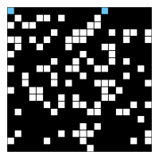
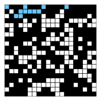
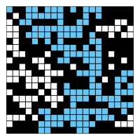
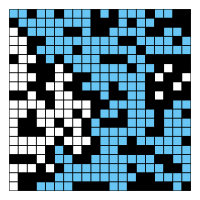

作业2：渗透
截止日期：2024年2月26日
与之前的作业不同，本次作业的长度相当于一个项目。请尽早开始。特此提醒。对于 未能理解本次作业的深度而导致的延期申请，我们将不予批准 。
常见问题
每次作业顶部都会链接一个常见问题页面。你也可以通过在URL末尾添加“/faq”来访问。作业2的常见问题位于 这里 。
获取骨架文件
请按照
作业工作流程指南
开始本次作业。本次作业的代号是
hw2
。
简介
在本程序中，我们将编写一个程序，通过 蒙特卡洛模拟 来估算渗透阈值。
介绍视频
本次作业的介绍视频可以在
此链接
找到。视频分为三个部分：简介、实现提示和优化提示。如果你想迎接更难的挑战，可以忽略这些提示。如果你想观看Hug教授在普林斯顿大学时制作的八年前的视频，请参见
此链接
。注意，这些视频提到了实现
PercolationStats.java
；我们现在已经提供了这个类的完整解决方案，所以你不需要担心这一步。
作业2幻灯片
本次作业的幻灯片可以在 这里 找到。因为这是作业而不是项目，我们会提供一些解题思路提示。如果你想迎接更大的挑战，可以忽略它们。
为什么重要？
给定一个由随机分布的绝缘材料和金属材料组成的复合系统：需要多大比例的金属材料才能使复合系统成为电导体？给定一个表面有水（或地下有石油）的多孔地貌，在什么条件下水能够渗透到底部（或石油能喷涌到表面）？科学家们定义了一个称为渗透的抽象过程来模拟这种情况。
模型
我们使用N×N的网格站点来模拟渗透系统。每个站点要么是开放的，要么是阻塞的。 充满站点 是指一个开放站点，它可以通过相邻（左、右、上、下）的开放站点链连接到顶部一行的开放站点。如果底部一行有一个充满站点，我们就说系统发生了渗透。换句话说，如果我们填充所有与顶部行相连的开放站点，并且这个过程填充了底部行的某个开放站点，那么系统就发生了渗透。（对于绝缘/金属材料的例子，开放站点对应于金属材料，因此发生渗透的系统有一条从顶部到底部的金属路径，充满站点是导电的。对于多孔物质的例子，开放站点对应于水可以流过的空隙，因此发生渗透的系统让水填充开放站点，从顶部流到底部。）
在下图中，你可以看到在左侧的系统中，水能够从顶部一行的一个站点开始，通过空的站点向下渗透，直到底部一行的一个空站点。
而在右侧，顶部行站点中的水无法向下渗透到底部行的开放站点。

Percolation.java
Percolation 类
为了模拟渗透系统，请使用以下API完成
Percolation
类：
public class Percolation {
public Percolation(int N) // create N-by-N grid, with all sites initially blocked
public void open(int row, int col) // open the site (row, col) if it 是 not open already
public boolean 是Open(int row, int col) // 是 the site (row, col) open?
public boolean 是Full(int row, int col) // 是 the site (row, col) full?
public int numberOfOpenSites() // number of open sites
public boolean percolates() // does the system percolate?
}
渗透问题
在一个著名的科学问题中，研究人员对以下问题感兴趣：如果站点以概率$p$独立地设置为开放（因此以概率$1-p$阻塞），系统发生渗透的概率是多少？当$p$等于0（没有站点开放）时，系统不会渗透；当$p$等于1（所有站点都开放）时，系统会渗透。下图显示了20×20随机网格（左）和100×100随机网格（右）的站点空置概率$p$与渗透概率的关系。


当$N$足够大时，存在一个阈值$p^*$，当$p < p^*$时，随机N×N网格几乎从不渗透；当$p > p^*$时，随机N×N网格几乎总是渗透。目前还没有推导出确定渗透阈值$p^*$的数学解。你的任务是编写一个计算机程序来估算$p^*$。
通过实现上述API中给出的所有方法，完成
Percolation.java
。
WeightedQuickUnionUF
类
WeightedQuickUnionUF
类由普林斯顿大学的
algs4
库提供，具有以下API：
public class WeightedQuickUnionUF {
public WeightedQuickUnionUF(int n) // creates a UF with n elements
public int count() // number of disjoint sets
public int find(int p) // the root of p's set
public boolean connected(int p, int q) // whether p and q are in the same set
public void union(int p, int q) // join p and q's sets together
}
你的代码必须使用
WeightedQuickUnionUF类！ 它已经为你实现好了，所以不要重新实现并查集抽象数据类型。
提示与边界情况
重要 ：我们已经发布了一系列视频，包含一些如何完成本次作业的提示！请务必观看；它们可能会为你节省大量时间。
边界情况
按照惯例，行和列的索引是0到
N
- 1 之间的整数，其中(0, 0)是左上角的站点：如果
open()
、
是Open()
或
是Full()
的任何参数超出其规定范围，则抛出
java.lang.IndexOutOfBoundsException
。如果
N
≤ 0，构造函数应抛出
java.lang.IllegalArgumentException
。
性能要求
构造函数的时间复杂度应与$N^2$成正比；所有方法应在常数时间内完成，加上对并查集方法
union()
、
find()
、
connected()
和
count()
的常数次调用。满足这些要求有点棘手！你可以先创建一个能正常工作的解决方案，然后再想办法让它更快。关于满足速度要求的提示，请参阅本规范开头的
视频
。你的
numberOfOpenSites()
方法必须在常数时间内完成。本作业的部分目标是学习如何将一个问题（渗透）转化为已解决问题（不相交集，即并查集）的形式。
PercolationStats.java
蒙特卡洛模拟。 为了估算渗透阈值，请考虑以下计算实验：
- 将所有站点初始化为阻塞状态。
-
重复以下操作，直到系统发生渗透：
- 在所有阻塞站点中随机均匀地选择一个站点。
- 打开该站点。
- 系统发生渗透时已打开站点的比例提供了渗透阈值的估计值。
例如，如果按照下面的快照在20×20的网格中打开站点，那么我们对渗透阈值的估计是204/400 = 0.51，因为当第204个站点被打开时系统发生渗透。这些图像分别对应于50、100、150和204个站点被打开的情况。




如果你对以下计算背后的数学原理感兴趣，请点击这里。
通过重复这个计算实验$T$次并取平均值，我们可以获得更准确的渗透阈值估计。设$x_t$为第$t$次计算实验中开放站点的比例。样本均值$\mu$提供了渗透阈值的估计值；样本标准差$\sigma$衡量了阈值的锐度。
$\mu = \frac{x_1 + x_2 + … + x_T}{T}$，$\sigma^2 = \frac{(x_1 - \mu)^2 + (x_2 - \mu)^2 + … + (x_T - \mu) ^2}{T-1}$
假设$T$足够大（例如，至少30），以下提供了渗透阈值的95%置信区间：
$[\mu - \frac{1.96\sigma}{\sqrt{T}}, \mu + \frac{1.96\sigma}{\sqrt{T}}]$
为了执行一系列计算实验，我们为你提供了一个
PercolationStats
数据类型。
构造函数接受两个参数
N
和
T
，并在
N
×
N
网格上执行
T
次独立的计算实验（如上所述）。利用这些实验数据，它计算出渗透阈值的均值、标准差和95%置信区间。
打开
PercolationStats.java，查看提供的构造函数和方法。然后运行main方法，并解释结果。这些数字告诉你关于渗透问题的解决方案的什么信息？这部分作业没有交付物；如果你正确实现了
Percolation.java，你现在应该有了渗透阈值p的95%置信区间。
运行时分析（不评分）
这部分作业不会评分，但强烈建议你至少阅读并思考以下几点：
-
使用 QuickFindUF 中的快速查找算法实现
Percolation数据类型。使用 Stopwatch 来测量不同N和T值下PercolationStats的总运行时间。将N加倍对总运行时间有什么影响？将T加倍对总运行时间有什么影响？ -
现在，使用
WeightedQuickUnionUF中的加权快速合并算法实现Percolation数据类型。回答与上一要点相同的问题。
提供的文件
我们提供两个客户端程序作为大规模可视化跟踪工具。
我们强烈建议使用它们来测试和调试你的
Percolation
实现。
示例数据文件
inputFiles
目录包含一些用于可视化客户端的示例文件，包括我们将在下面使用的
input20.txt
。
这里 是每个输入文件对应的预期输出图像。
基于文件的可视化客户端
PercolationPicture.java
通过执行以下步骤进行可视化：
- 从文件中读取网格大小N。
- 创建一个N×N的站点网格（初始时全部阻塞）。
- 从文件中读取要打开的站点序列（第i行，第j列）。每打开一个站点后，使用标准绘图将充满站点绘制成浅蓝色，开放站点（未充满的）绘制成白色，阻塞站点绘制成黑色，站点(0, 0)位于左上角。
对于输入文件
input20.txt
，程序应产生如下图所示的输出。这些图像分别对应于50、100、150、204和250个站点被打开的情况。

你可以通过在IntelliJ程序的
运行 -> 编辑配置 -> + -> 应用程序
选项卡中传入正确的参数来运行此输入的可视化工具。在这里，将"主类"设置为
PercolationPicture
，将"程序参数"设置为输入文件（例如，
inputFiles/input20.txt
）。最后，点击"运行"按钮开始运行可视化工具。
打开
PercolationPicture.java并按照上述步骤运行可视化工具。使用此工具帮助你调试Percolation.java方法！
交互式可视化客户端
InteractivePercolationVisualizer.java
使用鼠标作为输入，对渗透系统中打开站点的结果进行动画展示。它接受一个命令行整数
N
来指定网格大小。作为额外功能，它会按照
PercolationPicture
（如上所述）使用的相同格式打印出打开的站点序列，因此你可以用它来准备有趣的测试文件。如果你设计了一个有趣的数据文件，欢迎在Ed上分享。
打开
InteractivePercolationVisualizer.java，并按照与PercolationPicture相同的步骤运行交互式可视化工具。注意，对于交互式版本，你 不需要 提供程序参数。使用此工具帮助你调试
Percolation.java方法！
注意：如果你使用的是IntelliJ，可以在 运行 -> 编辑配置 中选择要运行的类（即选择你想要运行的main方法）。更多信息，请查看常见问题
测试
你会发现
InteractivePercolationVisualizer
作为验证
Percolation
类是否正确实现的完整性检查非常有用。如果你的实现正确，点击单元格应该会打开（并在必要时填充）这些站点。还会显示开放站点的数量以及系统是否发生渗透的提示。
在
tests
文件夹中，我们为你提供了两个基本测试。
你应该向
PercolationTest.java
添加更多测试来测试你的代码。
提交与交付物
你应该按照通常的方式提交，即推送到GitHub，然后在Gradescope上提交。本次作业没有速度限制。
交付物：
-
Percolation.java
致谢
本作业最初由普林斯顿大学的Kevin Wayne和Bob Sedgewick开发，自动评分器由Josh Hug为普林斯顿算法课程构建。